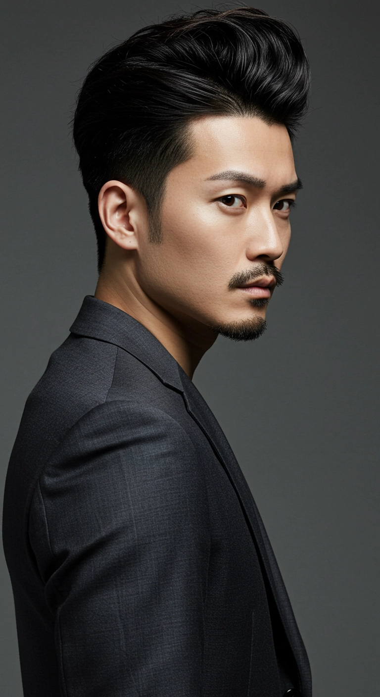

Modern Rezent
- モダンリーゼント -
洗練された現代風リーゼント。クラシックな形にトレンドを加え、ツヤ仕上げもラフ仕上げも自在。ビジネスにもカジュアルにもマッチ。
洗練された現代風のモダンリーゼントは、クラシックなスタイルにトレンドを加えた髪型。ツヤ仕上げもラフ仕上げも自在で、ビジネスにもカジュアルにもぴったりマッチします。シンプルでありながら、どんなシーンにも適応できる万能なスタイルです。